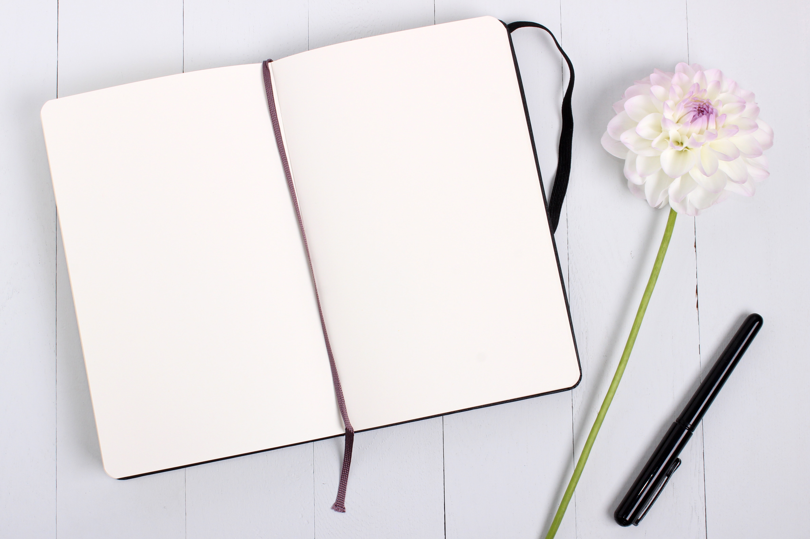

<ion-header>
    <ion-toolbar>
        <ion-buttons slot="start">
            <ion-menu-button></ion-menu-button>
        </ion-buttons>
        <ion-title>Diary</ion-title>
    </ion-toolbar>
</ion-header>

<ion-content id="diarybody">
    <ion-grid>
        <ion-row id="def">
            <ion-col class="ion-text-center">
                <ion-card>
                    <ion-card-header>
                        
                        <ion-card-title>Your Go-to Diary</ion-card-title>
                        <ion-card-subtitle>
                            <ion-text>An online Diary which has both Collaborative and Personal Diary</ion-text>
                        </ion-card-subtitle>
                    </ion-card-header>
                    <ion-card-content>
                        <ion-buttons style="padding-left: 30px;">
                            <ion-button [routerLink]="['/collaborativediary']" color="primary">
                                Collaborative diary
                            </ion-button>
                        </ion-buttons>
                        <ion-buttons style="padding-left: 50px;">
                            <ion-button [routerLink]="['/personaldiary']" color="secondary">
                                Personal diary
                            </ion-button>
                        </ion-buttons>
                    </ion-card-content>
                </ion-card>
            </ion-col>
        </ion-row>
    </ion-grid>

</ion-content>